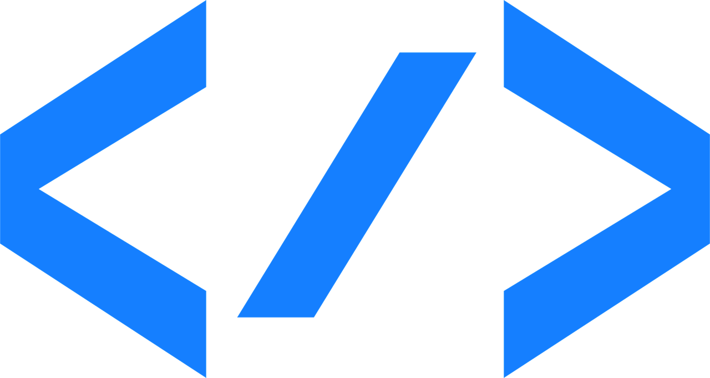
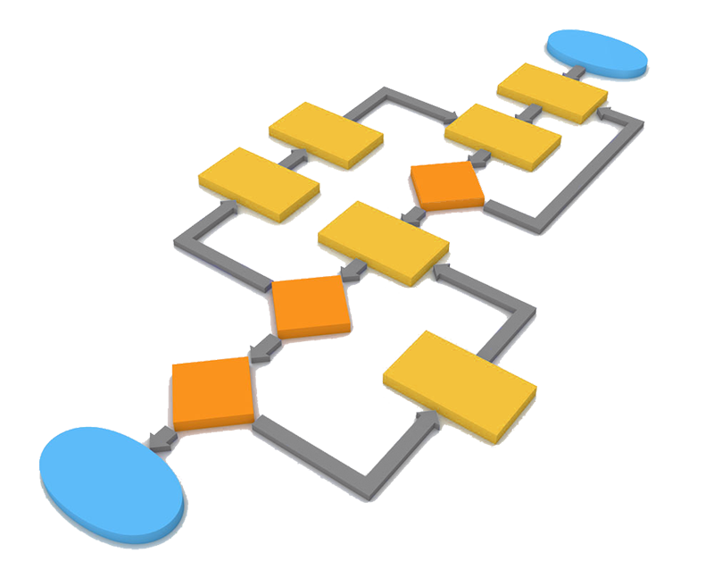
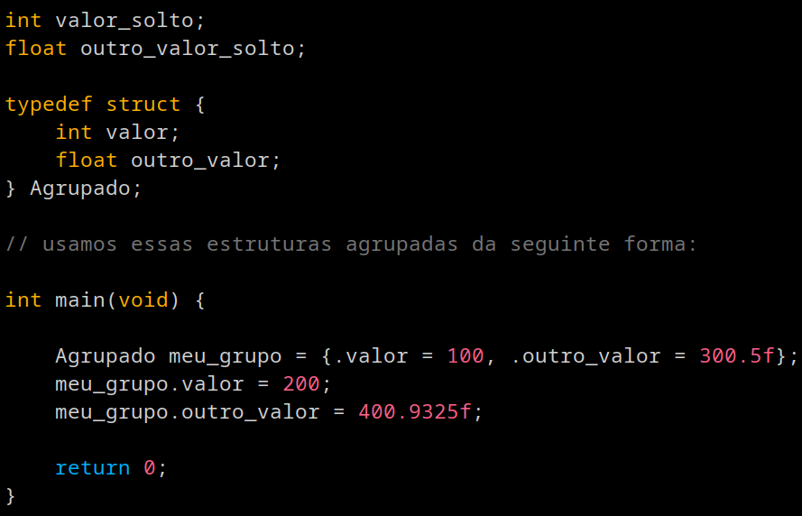
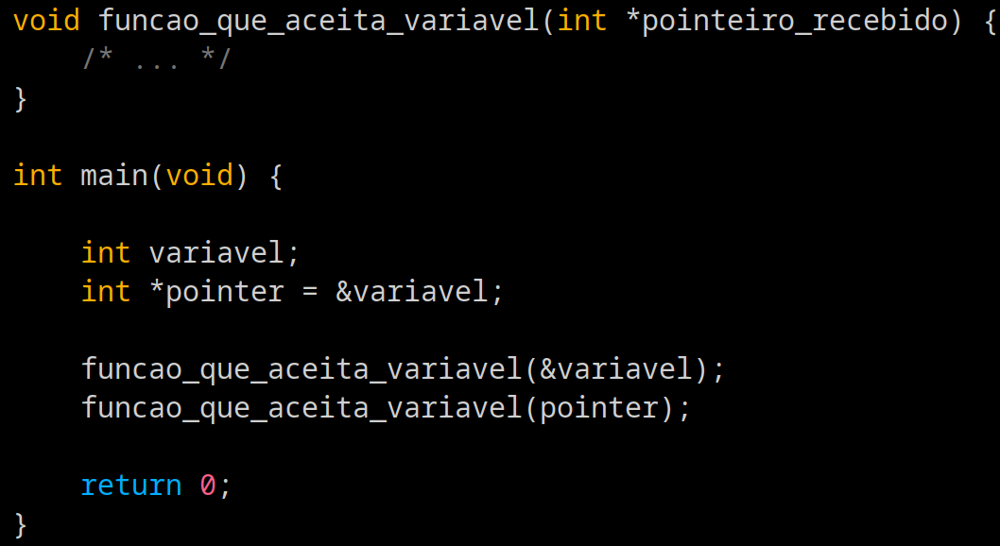
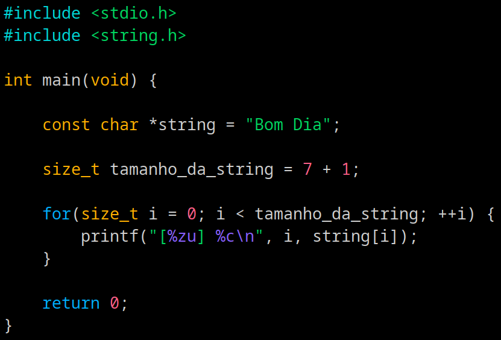
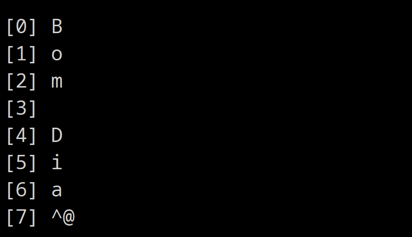
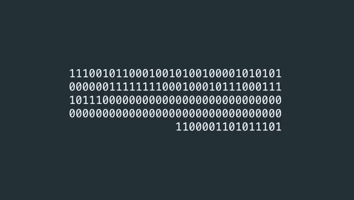
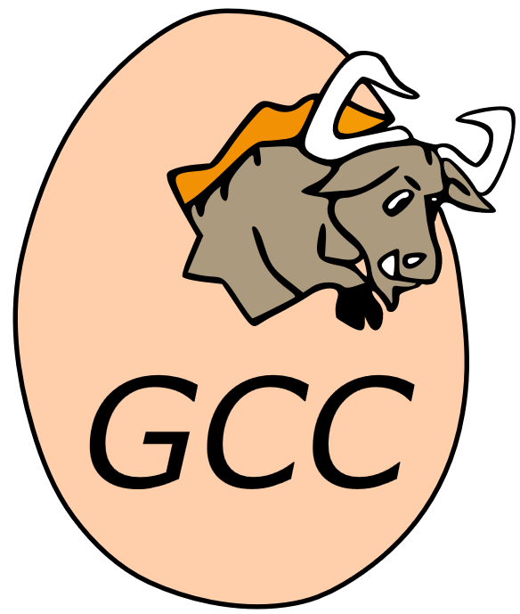

Aprender C

Atividade extensionista UNINTER
3. Conceitos de programação
Variáveis
Variáveis são lugares na memória do computador que guardam valores. Pense nelas como caixinhas que guardam tipos de coisas diferentes.
Tipos de dados
Tipos de dados controlam e que tipo de informações são armazenadas em uma variavel, seu tamanho e quais operações podem ser realizadas sobre ela.
Operadores
Eles podem ser divididos em 4 categorias:
Matemáticos: [ + - * / % ]
Relacionais: [ == != > < >= <= ]
Lógicos: [ && || ]
Especificos da computação: [ >> << ]

Estruturas de controle
Mudam a execução do programa dependendo das condições atuais.
Exemplo: Se situação A, faça X, se situação B, faça Y.

3.1 Conceitos de programação específicos a linguagem C
Muitos conceitos específicos de varias linguagems são compartilhados entre si.
Muitos deles vindo diretamente da conceitos criados pela linguagem C.
Entendendo alguns desses conceitos, podemos entender melhor estruturas em qualquer linguagem.
struct
Structs servem para agrupar varios tipos de dados em um unico bloco.
Criando um "Super bloco" ou um "Novo tipo" qual você pode trabalhar em cima.

Ponteiros / Pointers
São variáveis que armazenam o endereço de memória de outra variável.
Permitem a manipulação direta do hardware, passagem de parâmetros por referência e são a base para a criação de estruturas de dados dinâmicas.

Null terminated strings /
C não possui um tipo nativo "String".
As strings são vetores de caracteres (char) cujo fim é obrigatoriamente marcado pelo caractere nulo \0.
Esquecer esse terminador gera falhas graves de leitura de memória.


Saida do programa mostrando null-terminated strings (\0)3. Principais compiladores e ferramentas para C.
Como já falamos anteriormente, C é uma linguagem compilada.
O que faz com que necessitemos de um compilador para utilizarmos a linguagem.
Ja vimos anteriormente, compiladores sendo utilizados, agora iremos apreender um pouco mais sobre eles.
Compiladores são os "tradutores", de nosso texto legivel (linguagem de programação) para a linguagem de maquina (binário).
Como a linguagem C não é desenvolvida inteiramente sobre um grupo, mas invez disso, padronizada para que varios grupos possam comunicar-se entre si, existem varias implementações de compiladores e ferramentas para trabalhar com C. Vamos explorar alguns compiladores e ferramentas.

Processo de compilação
O processo de compilação é dividido em várias partes, porem iremos focar nas partes mais simples.
O processo começa lendo seu programa linha-por-linha, interpretando seu o código e gerando o que chamamos de "Abstract Syntax tree".
Apos isso, percorre esta AST e gera representação intermediaria, geralmente Assembly.
O que é assembly?
Assembly é uma "tradução" direta da linguagem de maquina. cada instrução corresponde / traduz diretamente a uma instrução da máquina.
Observe a animação abaixo, seguindo o processo de reverter o código binário para Assembly.

O que é em seguida passado para o "Assembler", qual pega o valor correspondente a cada instrução em binário, e junta em um arquivo, o qual depois passa pelo LINKER, qual junta com biblíotecas, tanto do sistema quando externas e etc.
Não iremos nos aprofundar nessa etapa por enquanto.
Compiladores.
Como dito anteriormente, C tem varios compiladores diferentes, pois não é controlado somente por um grupo ou entidade.
Os maiores e principais compiladores são os seguintes:
GCC - Gnu Compiler Collection
Sistemas suportados: Windows, POSIX(Linux, MacOs, BSDs), Embarcados(Embedded)
Gnu Compiler Collection (GCC) é na realidade, o nome de um conjunto de compiladores para diferentes linguagens, qual obviamente a primeira é C.
É um programa de código aberto, criado pela GNU Software foundation, para uso em seu sistema
É um dos compiladores mais utilizados hoje em dia e sempre um dos primeiros a implementar as novidades das verções mais novas do C. Suporta praticamente toda arquitetura de CPU que existe em larga escala hoje em dia.
Seu uso mais popular é ser o compilador de escolha para o projeto do Kernel do Linux.

Clang - llvm/Clang
Sistemas suportados: Windows, POSIX(Linux, MacOs, BSDs), Embarcados(Embedded)(limitado)
Clang (significando C-lang, ou seja, abreviação em inglês para linguagem C), é um compilador que funciona de uma forma ligeiramente diferente dos outros.
O Projeto LLVM (low level virtual machine), é um projeto de uma simples maquina virtual, qual executa sua propia linguagem de máquina, a "LLVM IR", qual pode ser facilmente transformada em linguagem de máquina real.
O Projeto Clang, qual foi montado como "face" do projeto LLVM, qual seria um compilador de C que gera o assembly especifico dessa máquina virtual.
Grande ênfase em modulariedade e tenta suportar tudo que o GCC suporta tambem, com a intenção de você poder trocar entre os dois sem dores de cabeça.
Apesar de ter um foco maior em C++, continua sendo ótimo para C.
Compilador principal das plataformas da Apple.
msvc - Microsoft visual C++ - cl.exe
Sistemas suportados: Windows
Microsoft Visual C++, ou mais facilmente chamado MSVC, ou cl.exe, é um compilador criado pela Microsoft para uso no Windows.
Seu foco, atualmente, como o nome diz, é em C++, porem ofereçe extendido suporte ao C (mesmo features do C incompátiveis com C++) devido a boa parte da infraestrutura do Windows ser escrito em C.
Seu peso como um dos maiores distribuidores de compilador está mais associado ao comitê de C++, sendo normalmente um dos primeiros compiladores a trazer as novidades do C++, porem sempre atrasando com o C moderno.
O que não é tao ruim, dado que o o WINAPI é todo em verções antigas do C. (com extenções da microsoft)